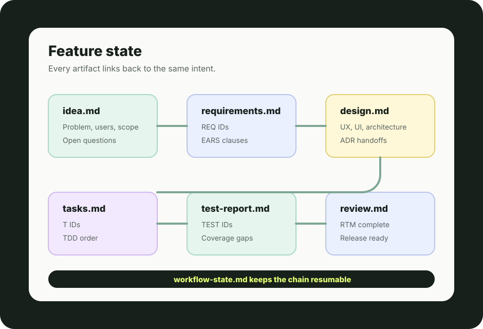

The problem
AI coding tools often start in the wrong place.
Most assistants jump straight to implementation. That can produce code quickly, but it also bakes in unclear requirements, missing decisions, and late-stage rework.
v0.2 · Foundation release
Most AI coding tools jump straight to writing code — often the wrong code. Specorator is a ready-to-use workflow template that flips it: you stay in charge of what to build, specialist AI agents handle how, and every decision is traceable.
git clone https://github.com/Luis85/agentic-workflow.git my-project && cd my-project && claude

The problem
Most assistants jump straight to implementation. That can produce code quickly, but it also bakes in unclear requirements, missing decisions, and late-stage rework.
The product
Specorator turns software work into staged artifacts, specialist roles, quality gates, and traceable decisions so agents can move fast without guessing what humans meant.
Specorator is for work where context, decisions, and review history matter more than a one-shot code answer.
Clone or fork it, adapt the steering docs, and let every feature move through the same visible path.
Idea, research, requirements, design, specification, tasks, implementation, testing, review, release, and retrospective.
Frame, diverge, converge, prototype, validate, and hand off before a feature brief exists.
PM, design, architecture, development, QA, review, release, and operations roles stay in their lane.
Each stage has acceptance criteria so defects are caught where they are cheapest to fix.
Requirements, specs, tasks, code, tests, and findings use stable IDs and link back to source intent.
Topic branches live in isolated worktrees, pass verify, and move through PR review before merge.
Review, docs, plan reconciliation, dependency triage, and Actions updates can be automated over time.
Claude Code gets first-class commands, while Codex, Cursor, Aider, Copilot, and other tools can follow AGENTS.md.
The repository gives each role an entry point without turning the process into a separate product to maintain.
Run discovery, shape requirements, review designs, and keep intent explicit.
Implement from clear tasks and specs instead of reverse-engineering stakeholder intent.
Coordinate humans and agents across a release cycle with visible gates and artifacts.
Use the same lifecycle while AI agents fill specialist roles one stage at a time.
Discovery creates the brief. The lifecycle turns it into tested, reviewed, releasable work.
The repo is the product: prompts, workflows, templates, checks, and examples that make agentic delivery repeatable.
.claude/
Claude Code agents, commands, skills, and operational prompts.
.codex/
Codex-specific delivery workflows for worktrees, verification, PRs, and cleanup.
docs/
The Specorator method, quality gates, how-to recipes, ADRs, and steering context.
templates/
Reusable Markdown artifact shapes for requirements, design, tasks, tests, and release.
specs/
Per-feature state and traceable artifacts produced as work moves through the lifecycle.
sites/
The public product page source, kept directly openable and deployable as static files.
Specorator is concrete Markdown work, not a hidden process. The example tree shows how intent becomes requirements, tasks, verification, and review.

Each feature carries its own state file and stage artifacts so humans and agents can resume with the same source of truth.
Clone or fork the repository, fill in the steering context, and start a feature through natural language or slash commands.
Copy the repository into a new workspace, or fork it on GitHub when you want to track changes upstream.
Adapt the constitution and steering docs so agents know your product, stack, and quality bar.
Start from a feature idea, a design sprint, or the orchestrated end-to-end workflow.
Keep every concern on its own branch, run npm run verify, and ship through review.
Install dependencies, run the verify gate, then open Claude Code and start from discovery or a feature brief.
git clone https://github.com/Luis85/agentic-workflow.git my-project
cd my-project
npm install
npm run verify
claude